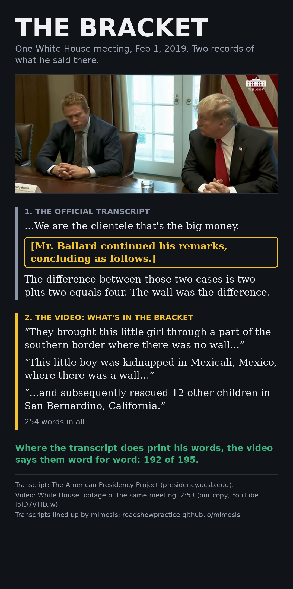

The Bracket
One White House meeting, Feb 1, 2019. Two records of what Tim Ballard said there. The official transcript skips the middle. The video doesn't.
The two records
1. The official transcript
The American Presidency Project prints the girl's story up to here:
“…We are the clientele that's the big money.”
[Mr. Ballard continued his remarks, concluding as follows.]
“The difference between those two cases is two plus two equals four. The wall was the difference.”
“Those two cases”: the transcript never prints the second case.
2. The video: what's in the bracket
“They brought this little girl through a part of the southern border where there was no wall…”
“This little boy was kidnapped in Mexicali, Mexico, where there was a wall…”
“…and subsequently rescued 12 other children in San Bernardino, California.”
254 words in all, between “the big money” and “The difference between those two cases”. The video also runs on past where the transcript stops.
Where the transcript does print his words, the video says them word for word: 192 of 195.
The 3 misses are “I” against “I've” and “Sánchez”, which our word rules split into two pieces.

How we found it
mimesis was started in June 2025 to line up four tellings of this story: the video against two op-eds he wrote (Deseret News, Feb 4, 2019, three days after the meeting; Fox News) and this transcript. On Oct 12, 2026 we ran that comparison again, with the rules and the hashes of all four inputs published first.
John's call before the run was “100% match… wall and all”. Under the rules we published, it did not hold:
| Text | Video's words found, in order | Story elements found (of 8) |
|---|---|---|
| White House transcript | 52% | 4 |
| Deseret News op-ed | 25% | 3 |
| Fox News op-ed | 17% | 4 |
The 52% is what led to the bracket. Read after the run, the transcript turned out to match the video wherever it prints his words. It drops the middle, the part with the Mexicali boy and “where there was a wall”. The op-eds tell the same cases in their own words, so they were never going to match word for word.
That second look was not part of the published test, and the result file says so. Full detail: pre-registration · result, run 1 · the script.
Check it yourself
- Open the transcript and find “Mr. Ballard continued his remarks, concluding as follows.”
- Read our transcript of the video beside it. The words before and after the bracket are the same, and the Mexicali boy sits in between.
The video is White House footage of the meeting (WH.GOV mark in the corner), 2:53. Our copy is YouTube i5ID7VTlLuw. The video's words come from Whisper; the Mexicali and Calexico lines were checked with a second Whisper model.